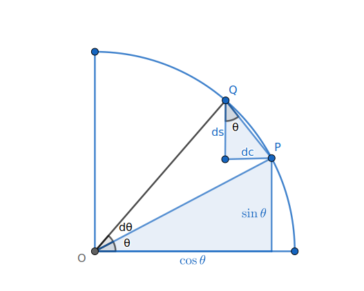

牛顿几何法在数学家眼中有失严谨, 但因其充满几何直观, 至今仍在物理学中使用.
[来自 特里斯坦《微分几何：可视化方法》]
求 `sin theta`, `cos theta` 的导数.
记 `s = sin theta`, `c = cos theta`, 在单位圆上令 `P = (sin theta, cos
theta)`, `Q = (sin(theta + "d"theta), cos(theta + "d"theta))`, 当 `"d"theta to 0` 时,
`/_OPQ to 90^@`, 由相似三角形知
`dd s theta = (cos theta)/1`,
`quad dd c theta = (-sin theta)/1`.
